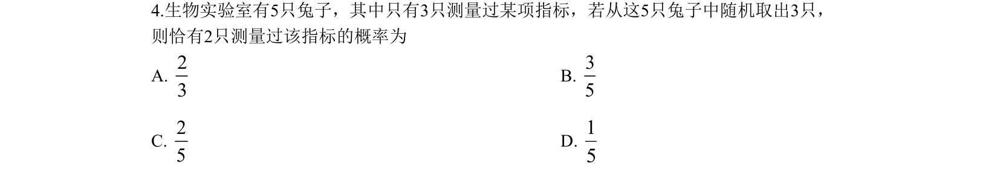
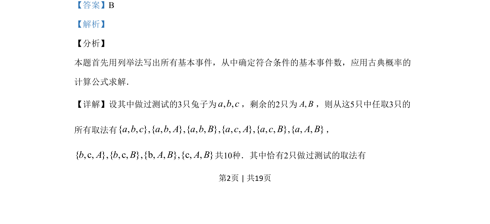
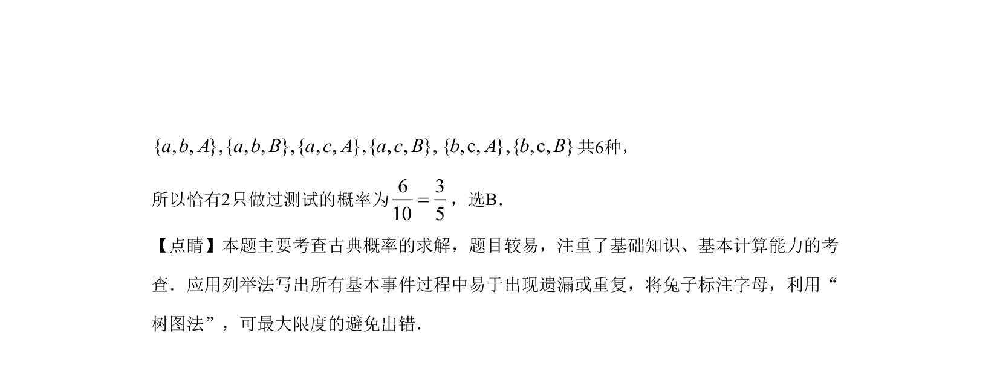

考点：古典概型 列举法 基本事件计数

本题通过列举法求解从5只兔子中任取3只时恰有2只做过测试的古典概率。


📄 原 PDF 第 2 页：
素材/真题/吉林/2008-2024·（吉林）数学高考真题/2019年高考数学试卷（文）（新课标Ⅱ）（解析卷）.pdf
4.生物实验室有5只兔子，其中只有3只测量过某项指标，若从这5只兔子中随机取出3只， 则恰有2只测量过该指标的概率为 A. 23 B. 35 C. 25 D. 15
【答案】B 【解析】 【分析】 本题首先用列举法写出所有基本事件，从中确定符合条件的基本事件数，应用古典概率的 计算公式求解． 【详解】设其中做过测试的3只兔子为, ,a b c，剩余的2只为,A B，则从这5只中任取3只的 所有取法有{ , , },{ , , },{ , , },{ , , },{ , , },{ , , }a b c a b A a b B a c A a c B a A B， { ,c, },{ ,c, },{b, , },{c, , }b A b B A B A B共10种．其中恰有2只做过测试的取法有